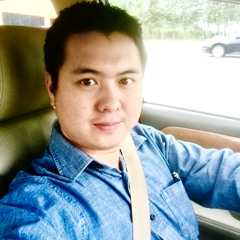

Le Vu Hoang
About Me

Passionate with proven Marketing skills and 5 years of experience as Assistant Brand Manager. Experience in data analysis, develop brand plan, event execution, digital marketing (include paid & earn media, social media…) execution and work logically with administration tasks. I currently looking for opportunities to work in Marketing Department with desire to learn more marketing knowledge and build up the image of the company.
Assisted Brand Manager & Marketing Manager to build the business plans, including: branding, visibilities, signage design & productions, design & copywriting brochure, planed & executed outlet activations, events, social media…
Increased the followers of Tiger beer brand on social media up to 200% and Tiger beer become the most engagement brand on social media.
Organized successfully biggest events of Tiger beer brand such as: Tiger Street Football, Tiger Blue Xmas, Tiger Translate Music, Tiger Wall, Tiger Food and Tiger Remix… which built up Tiger brand became top brand beer in Vietnam.
Planned and managed digital marketing projects to build up the image of Tiger beer brand through social media & mobile marketing which include propose content marketing for Facebook, SMS, Website, OTT…
Proposed and managed paid social media advertising in excel files for Facebook, YouTube, E-banner, and other OTT application and tracking the result base on proposed files.
Worked closely with key consumers to receive their feedbacks on products & services.
Tiger beer achieved 8 million hectoliters in 2016 and officially became global brand of Heineken Company.
Coordinated with external agencies to plan and to execute event smoothly & successfully.
Worked with internal departments such as: accounting